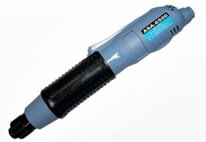

电动螺丝刀 Electric screwdriver
装有调节和限制扭矩的机构，用于拧紧和旋松螺钉用的电动工具。该电动工具，主要用于装配线，是大部分生产企业必备的工具之一。产品质量需符合中华人民共和国机械行业标准 JB/T 10108 - 1999。

- 电动螺丝刀Electric screwdriver
- 省时、省力、精准
Saving time, effort, precise
当前位置:首页 >>电动螺丝刀
- 所属类别：电动螺丝刀
产品标题：瑞士马达电动螺丝刀
- 产品型号：ASA-S2001M
- 产品特点：瑞士、日本无尘马达+变频稳压电源=保用3年1000万次
● 瑞士、日本原�b低�T量低���玉R�_，�＠��R�_耗��、�n�簟� �T量�H有市售�R�_的1/3
● �o碳粉溢出�O���R�_，�]有碳粉污染，尤其�m用於5C�a�I�� 子�o�m式�h境
● ��源供��器�炔孔��П闷止��猓��o段�{速控制，�D速在300 ～1000rpm之�g自行�x配
● 吸嘴�裼枚ㄎ豢自O���_保螺�z垂直�i付，吸嘴���郊吧炜s�L 度可依螺�z��格自由�{整 ● 搭配�＠�螺�z整理盒提高螺�z拾取率，�m用於牙��3mm以 下��小及不�P��螺�z�i付
订购热线：188-3806-1033